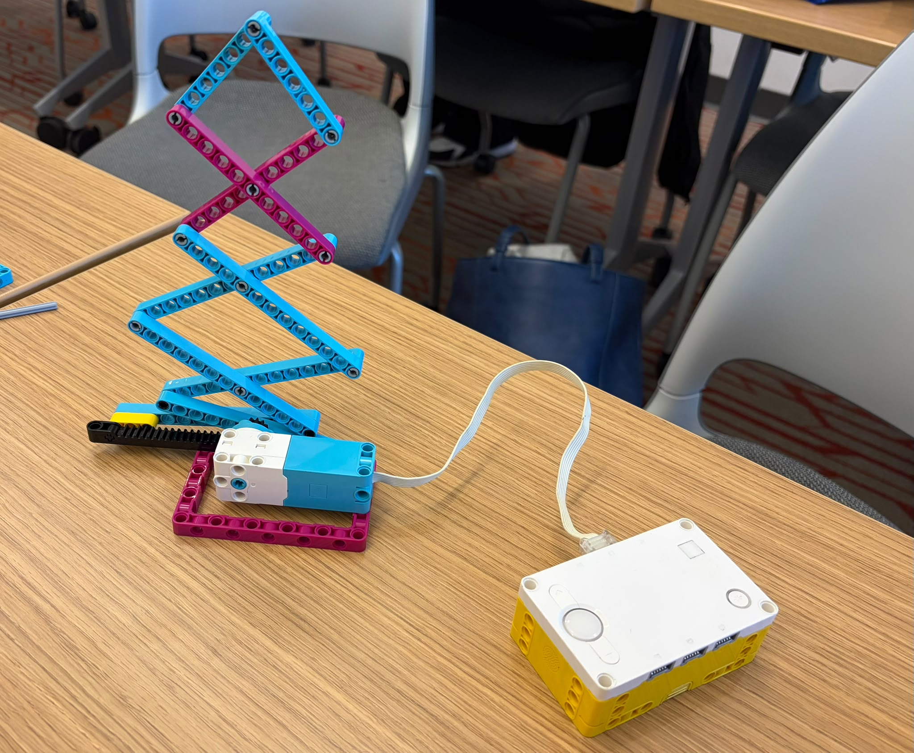

At the start of our haunted house project, our team decided to use scissor lifts. This mechanism allows a small input movement to create a faster and larger output movement. The tradeoff is that the output movement is weaker.
This is our initial project direction. As we continue working, we will add more information about our design and what we learn.